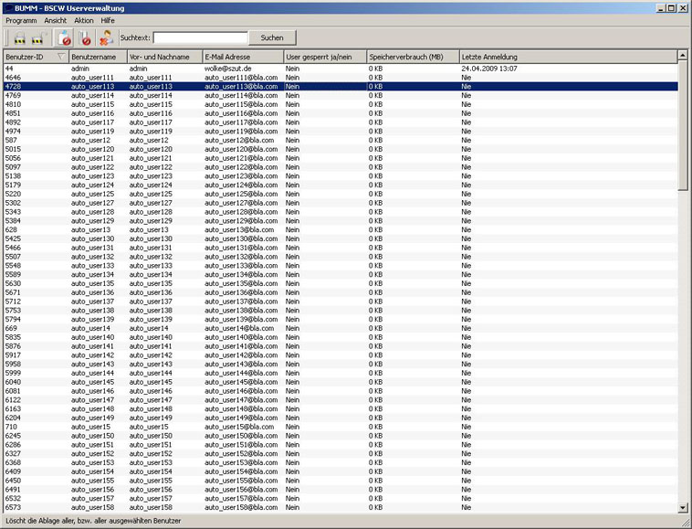

Die Benutzerdetails

Auf diesem Bild ist das andockbare Fenster der Benutzerdetails aktiviert. Möchgten Sie dieses deaktivieren, so klicken sie im Menü Ansicht auf Benutzerdetails:

Das Ergebnis ist nun, dass das Fenster ausgeblendet und lediglich die Liste aller BSCW-Benutzer zu sehen ist:

Wollen Sie das Fenster wieder aktivieren so gehen sie ebenfalls unter Ansicht auf Benutzerdetails:

Das Fenster der Benutzerdetails verfügt über mehrere Reiter:
Info
Konto
Persöliches
Bild

Hier können Sie grundlegende Benutzerinformationen wie Name und E-Mail-Adressen einsehen. Ebenfalls angezeigt wird, ob ein Benutzer gesperrt ist oder nicht.

Dieser Reiter zeigt die Informationen zum Benutzerkonto an. Man erfährt unter anderem ob der Benutzer ein Administrator ist, wann er erstellt wurde und wieviel Speicherplatz er verbraucht.

Hier kann man die persöichen und die Kontaktinformationen eines Benutzers einsehen.

Da ein Benutzer die Möglichkeit hat ein Bild hochzuladen, wird dieses in diesem Reiter dargestellt.